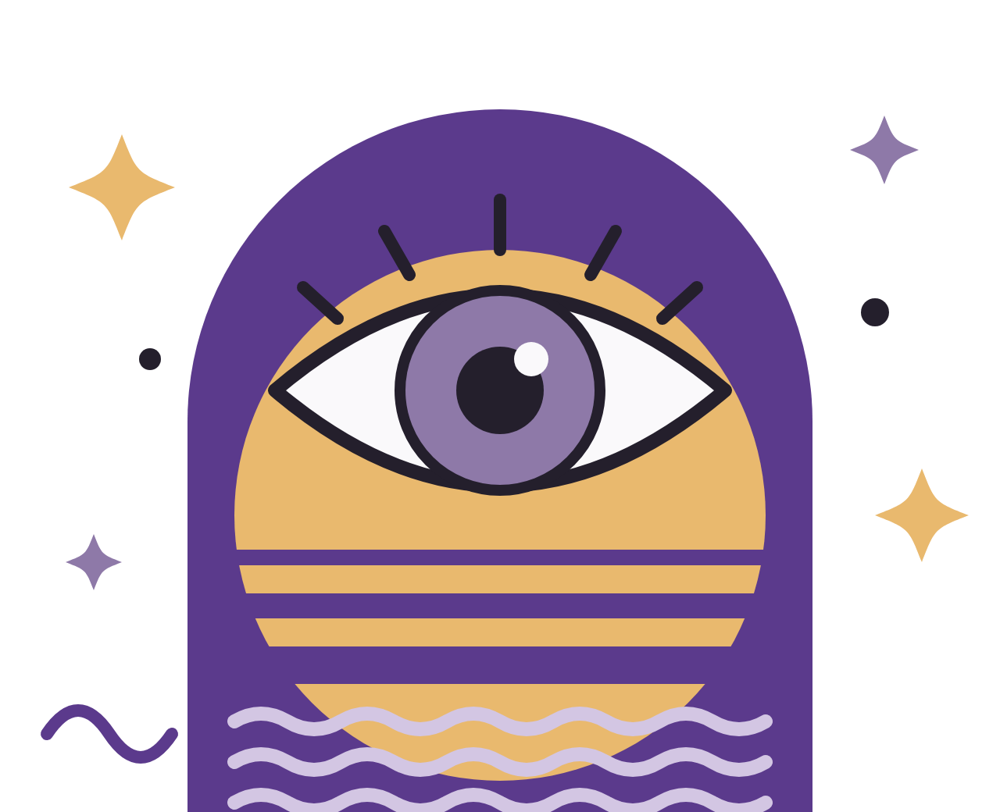

Turning understanding into meaningful impact.
As a Product Manager, I investigate before building.
User interviews, observation, data analysis: a structured methodology used to create solutions that solve real problems,
with impact we can measure.

Curiosity as a boost.

Trained as a Graphic and UX designer, I have progressively shifted toward product-oriented roles where design supports decision-making, user value, and business impact. My experience spans cross-functional work within various and innovation environments.
I approach projects by framing problems through user needs, business goals, and strategic context. I translate insights into actionable directions that teams can align on, balancing usability, feasibility, and strategic relevance.
I keep my product culture sharp by actively following industry media such as The Product Crew, Le Ticket and Data for Good. I keep learning through online courses, and I enjoy testing new tools to keep my practices up to date.
Where I learned.
Academic cursus
-
2023
Master’s Degree in Marketing and Digital Strategy
Digital Campus, Paris
-
2021
Bachelor’s Degree in Design and Applied Arts
Strasbourg University
Certification
-
2025
Product Manager
Product Management School
My values and product philosophy.
Four principles guide every product decision I make, from discovery to delivery.
User-centricity
Every product decision starts with a deep understanding of users’ real needs. Before thinking about solutions, I seek to understand the problem: interviews, field observations, behavioural analysis.
Outcome over output
What matters isn’t the number of features shipped, but the measurable impact on users and the business. Every product decision should tie back to a concrete outcome.
Data‑informed, not data‑driven
Data informs my decisions but never replaces product judgement. Metrics give me the “what”; user research gives me the “why”.
Empowered teams
The best solutions emerge when teams are given problems to solve rather than ready‑made solutions. Context, clear goals, autonomy: creativity does the rest.
My skills & tools.
Six skill families, proven tools, and an AI-augmented approach.
Discovery & user research
- Hotjar
- Maze
- Testapic
Strategy & prioritization
- Notion AI
- Excel
Delivery & agile
- Jira AI
- Notion AI
- Slack
Data & analytics
- Amplitude
- SQL
Design & prototyping
- Figma AI
- Miro AI
Automation & AI
- Lovable
- Claude AI
Good to know.
What are you looking for in your next role?
I am particularly interested in roles where I can leverage my design background to contribute to product strategy, user experience, and cross-functional collaboration.
Are you open to full-time opportunities?
I am open to full-time opportunities and also freelance collaboration.
What kind of team or work environment do you thrive in?
I thrive in collaborative, fast-paced environments where product, design, and technical teams work closely together. I value open communication, shared ownership, strong Tech culture and spaces where ideas can be challenged constructively to drive better product decisions.
Are you open to relocation or remote work?
Yes, I am open to both relocation and remote opportunities, depending on the role, team structure, and project context.
What languages do you speak professionally?
I am fluent in both French and English, written and spoken, and comfortable working in international environments.
How are you currently developing your product management skills?
I actively strengthen my product and strategic skills through certifications and YouTube tutorials.
What makes your profile unique?
My background in Design and Digital Marketing allows me to approach product challenges with strong user empathy and a problem-solving mindset. I am used to translating complex ideas into clear directions, facilitating alignment between stakeholders, and balancing creativity with strategic constraints. I leverage design as a foundation to grow into a product-oriented role.
How do you handle disagreement between business goals and user needs?
I see these situations as opportunities to clarify priorities and align teams around impact. I rely on user insights, data when available, and open discussion to explore trade-offs and find solutions that balance user value with business objectives. My goal is to make decisions transparent and purposeful rather than purely opinion-driven.
Where are you based?
Paris, France.
Have something in mind?
I'd love to hear about interesting projects, collaborations, and opportunities. I will answer within 48h.
Contact now ↗